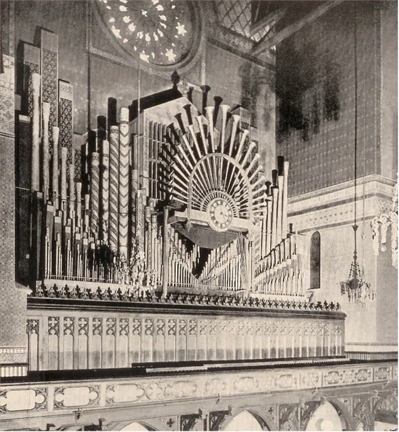

Organ Research Project by Aidan Kulikowski
Home
About
Pipe Organ Research Timeline and Data
by Aidan Kulikowski

Timeline of How Organs Evolved
Pipe Organ Builders for Churches
Pipe Organ Builders for Theatres